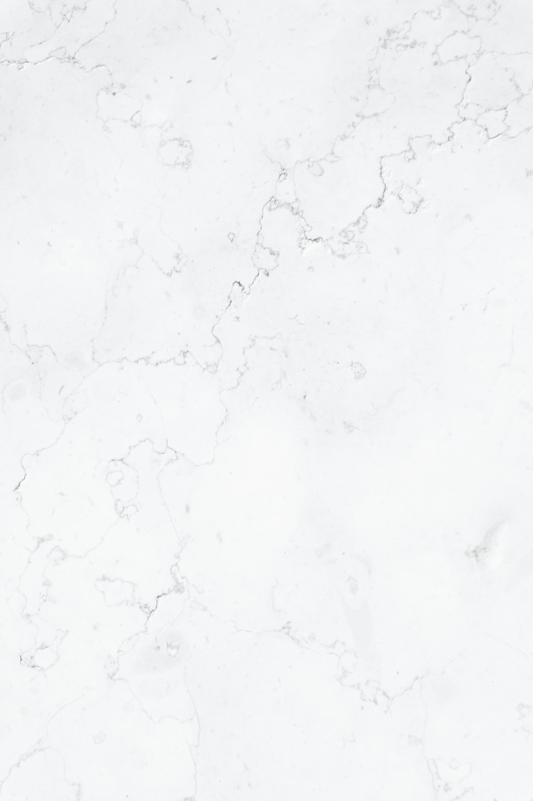

Natural stone restoration
Honing, polishing, sealing, and repair for marble, granite, travertine, and slate. Countertops that lost their luster, floors dulled by years of traffic, outdoor stone beaten by Georgia weather: we bring the finish back instead of tearing it out.
See the work